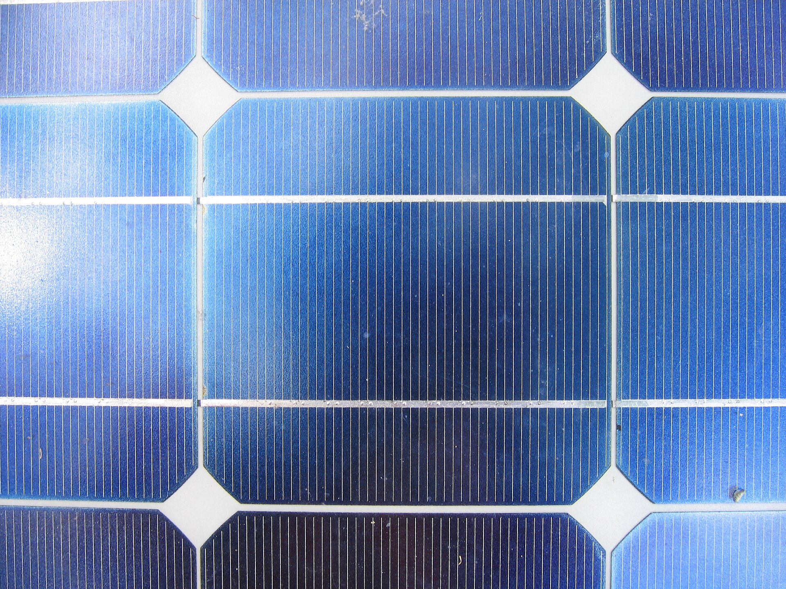

Rampur Kheda  goes dark for four to six hours every day.
Seventy-three panels
goes dark for four to six hours every day.
Seventy-three panels

, raised high over growing crops, and one battery bank will keep fifty homesWhat changes for Rampur Kheda
Our estimates for a full year of phase one, worked out from the household survey and the array size. The sums are shown underneath so you can check them.
- ~64,000kWh of clean electricity a year
- ~46 tof CO₂ kept out of the air each year
- Up to 23,000 Lof generator diesel no longer needed each year
- 4–6 hof daily power cuts covered for all 50 homes
How we worked it out: 40 kWp × 5.5 sun hours × 80% efficiency × 365 days ≈ 64,240 kWh. At India's grid emission factor of about 0.71 kg CO₂ per kWh, that is roughly 45.6 tonnes. Diesel assumes the 188.64 kWh the village uses each day during cuts would otherwise come from small generators making about 3 kWh per litre: 188.64 ÷ 3 × 365 ≈ 22,950 litres. That's an upper limit, since not every family runs a generator today.
Supports the UN Sustainable Development Goals
- 7Affordable and clean energy
- 13Climate action
- 2Zero hunger, through crops grown under the panels
Judge's quick tour
The project in seven short stops. Go in order with the Next button at the bottom of each page, or jump straight to whatever you want to see.
- Step 2
The village & the need
Who lives in Rampur Kheda, what a power cut costs them, and how we sized the grid.
- Step 3
How it works
Panels, battery and cables: the hardware that gets power from the sun to every home.
- Step 4
Innovation
Solar panels raised over crops, and a battery that checks the weather forecast.
- Step 5
Live dashboard
A working simulation of the control room. Speed up the day and switch on the AI.
- Step 6
Finances
Every rupee of the ₹36.1 lakh build, who pays for it, and how the grid grows.
- Step 7
Run by the village
The elected committee, fees, repairs and what happens on cloudy days.
- Step 8
Prototype & report
Our desk-scale cardboard model, its ₹490 bill and the full project report.